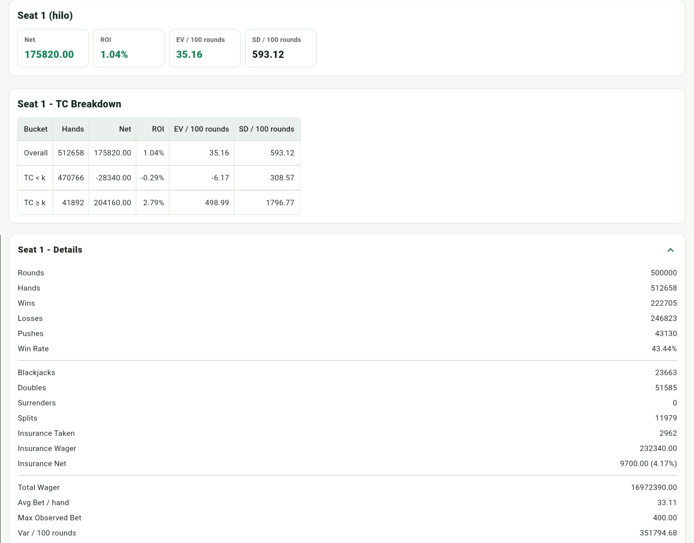
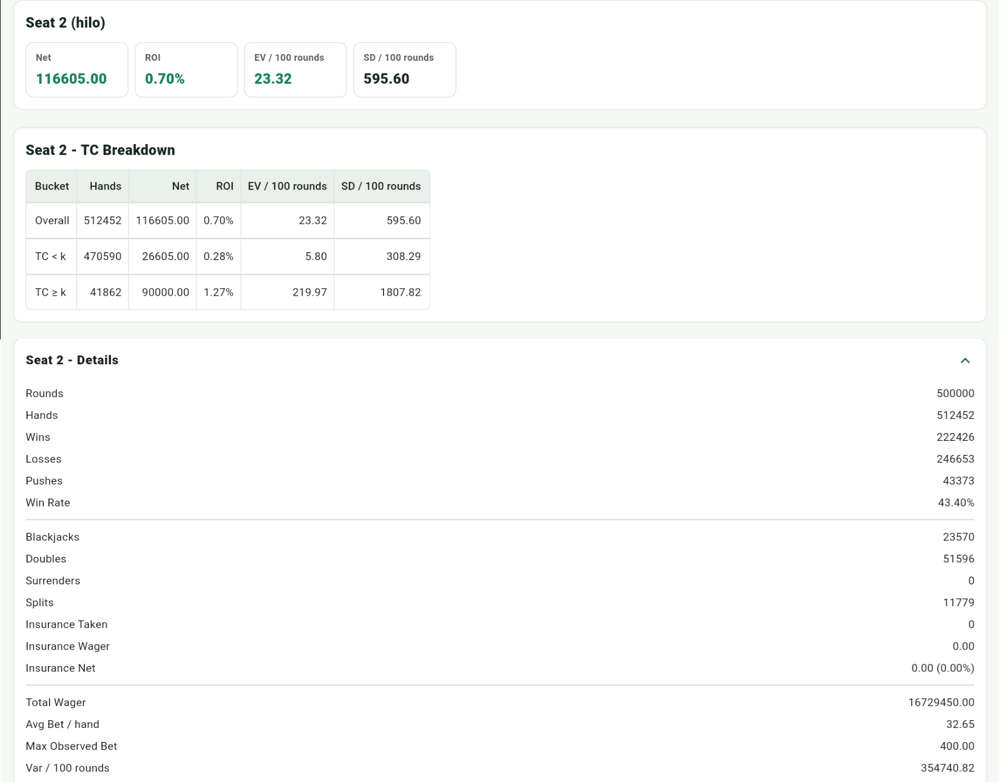

Deviations
Deviations are changes from basic strategy when TC reaches a specific threshold. The Illustrious 18 are among the most valuable Hi-Lo index plays.
Implementation Assumptions
The app uses the TC shown on screen. A deviation applies only when TC reaches the table threshold; otherwise it falls back to basic strategy.
Illustrious 18
| Situation | Threshold | Deviation |
|---|---|---|
| Insurance | TC >= +3 | Take Insurance |
| 16 vs 10 | TC >= 0 | Stand if surrender is unavailable |
| 15 vs 10 | TC >= +4 | Stand if surrender is unavailable |
| 10 vs 10 | TC >= +4 | Double |
| 16 vs 9 | TC >= +5 | Stand |
| 13 vs 2 | TC >= -1 | Stand |
| 13 vs 3 | TC >= -2 | Stand |
| 12 vs 2 | TC >= +3 | Stand |
| 12 vs 3 | TC >= +2 | Stand |
| 11 vs A | TC >= +1 | Double |
| 10 vs A | TC >= +4 | Double |
| 9 vs 2 | TC >= +1 | Double |
| 9 vs 7 | TC >= +3 | Double |
| 10,10 vs 5 | TC >= +5 | Split |
| 10,10 vs 6 | TC >= +4 | Split |
| 12 vs 4 | TC < 0 | Hit |
| 12 vs 5 | TC < -2 | Hit |
| 12 vs 6 | TC < -1 | Hit |
Fab 4
Fab 4 refers to four important late-surrender index plays in Hi-Lo.
| Situation | Threshold | Deviation |
|---|---|---|
| 15 vs 10 | Basic Strategy R | Surrender |
| 15 vs A | H17 +1 / S17 +2 | Surrender |
| 15 vs 9 | TC >= +2 | Surrender |
| 14 vs 10 | TC >= +3 | Surrender |
Insurance EV and Variance
Insurance is essentially a bet that the dealer's hole card is a 10-value card. Because it pays 2:1, insurance is worth taking only when the remaining shoe has enough 10-value cards to pass the break-even point. This is why Hi-Lo commonly uses TC >= +3 as the insurance index.
Over the long run, the main value of taking insurance correctly is increasing EV: at high TC, this side bet can move from negative expectation in normal situations to positive expectation for the player.
Insurance also affects variance. It can offset the main-bet loss when the dealer has blackjack, especially because high TC often comes with larger bets, so it can make the result distribution smoother and reduce the downside impact of a large bet running into dealer blackjack. However, insurance is still an additional side bet, so the more precise interpretation is: correct insurance mainly improves EV, while it may smooth variance in some high-risk situations, rather than guaranteeing lower variance under every statistical view.
The simulation below uses Hi-Lo with a 4/8/12/16/20 Bet Ramp over 500000 runs. The threshold TC >= k uses k = 3 to examine performance in the TC >= 3 range.


From the charts above, Seat 1 with insurance has positive net profit; in this simulation, the ROI from insurance is 4.17%. Compared with Seat 2, Seat 1 has higher EV / 100 (35.16 vs. 23.32) and slightly lower SD / 100 (593.12 vs. 595.6), though the SD difference is small. This matches the idea above: correct insurance mainly improves EV, while it may slightly smooth the volatility of high-TC, large-bet situations when the dealer has blackjack.